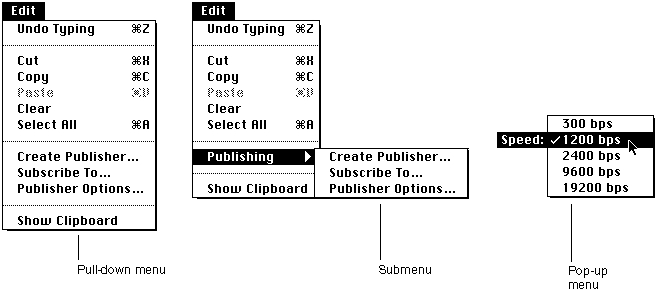
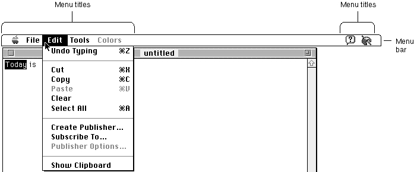

Introduction to Menus
A menu is a user interface element you can use in your application to allow the user to view or choose an item from a list of choices and commands that your application provides. Menus can appear in several different forms: pull-down menus, hierarchical menus, and pop-up menus.A pull-down menu is identified by a menu title (a word or an icon) in the menu bar. Your application can use pull-down menus in the menu bar to allow users to choose a command or perform an action on a selected object. A pop-up menu is a menu that does not appear in the menu bar, but appears elsewhere on the screen when the user presses the mouse button while the cursor is in a particular place. Pop-up menus are most often accessed from a dialog box. Your application can use pop-up menus to let the user select one choice from a list of many or to set a specific value. A submenu refers to a menu that is attached to another menu. A menu to which a submenu is attached is referred to as a hierarchical menu.
Figure 3-1 shows examples of a pull-down menu, a submenu, and a pop-up menu.
Figure 3-1 A pull-down menu, a submenu, and a pop-up menu

The standard menu bar extends across the top of the startup screen and contains the title of each available pull-down menu. Your application's menu bar should always provide at least the Apple menu, the File menu, and the Edit menu. When you insert the Apple menu in your application's menu bar, the Menu Manager automatically adds the Help and Application menus to your application's menu bar. It also adds the Keyboard menu if multiple script systems are installed or if a certain bit is set in the
'itlc'resource. Your application can include as many other menus as fit on the smallest screen on which your application runs, and you should create only as many items as are essential to your application.If your application uses a menu bar, you should make it always visible and available for use. If you do not always wish to display the menu bar (for example, if your application allows the user to view a screen presentation), you can give the user the option of viewing the presentation on the entire screen without the menu bar showing. However, you must provide a way, such as a keyboard equivalent for a command, for the user to access the menu bar or to make the menu bar reappear.
Using menus in your application allows the user to explore many possible choices and options without having to choose any particular one. By providing help balloons for your menus, you further allow users to learn about the possible actions or consequences of a particular menu choice without having to choose the menu command to find out what happens.
Figure 3-2 shows the SurfWriter application's menu bar with the Edit menu displayed. This application supports the standard Apple, File, and Edit menus; the Help and Application menus; and in addition supports two other application-specific menus.
Figure 3-2 The SurfWriter application's menu bar with the Edit menu displayed

Each menu has a menu title and one or more menu items associated with it. You should name each menu so that the title describes or relates to the actions the user can perform from that menu. For example, the Edit menu of a typical application contains commands that let the user edit the contents of a document.
Your application can disable any menu. The Menu Manager indicates that a menu is disabled by dimming its menu title. (In Figure 3-2, the Colors menu is disabled.) The Menu Manager dims all menu items of a disabled menu. The user can still pull down and examine the items in a disabled menu, but cannot choose any of the items.
Your application can also disable individual menu items. The Menu Manager dims the appearance of a disabled item and does not highlight it when the user rests the cursor on that item. If the user releases the mouse button while the cursor is over a disabled menu item, the Menu Manager reports that the user did not choose a menu command. (You can determine if this happened, however, by using the
MenuChoicefunction.)In Figure 3-2, the Paste command is disabled; the SurfWriter application disables the Paste command if the Clipboard is empty. SurfWriter also disables the Publisher Options command when the current selection does not contain a publisher or a subscriber. As explained in the chapter "Help Manager" in Inside Macintosh: More Macintosh Toolbox, your application should provide help balloons for disabled items that describe what the item normally does and explain why the item is not available at this time.
The Menu Manager highlights an enabled menu item when the cursor is over it.
- Note
- Although
enabledanddisabledare the constants you use in a resource file to display or to dim menus and menu items, you shouldn't use these terms in your help balloons or user documentation. Instead use the terms menus, menu commands, and menu items for those that are enabled, and use the terms not available and dimmed to distinguish those that have been disabled.
Enabled items do not have a dim appearance and can be chosen by the user.Your application specifies whether menu items are enabled or disabled when it first defines and creates a menu. You can also disable or enable menu items at any time after creating a menu. You should enable a menu item whenever your application allows the user to choose the action associated with that item, and you should disable an item whenever the user cannot choose that item. For example, if the user selects text and then presses the mouse button while the cursor is in the menu bar, you should enable the Copy command in the Edit menu. You should disable the Copy command in the Edit menu if the user has not selected anything to copy.
Your application can also specify other characteristics of menu items, such as whether the item has a marking character next to its text (for example, a checkmark) or whether the item has a keyboard equivalent (for example, Command-C for the Copy command). "Menu Items" beginning on page 3-11 describes the characteristics of individual menu items in more detail.
The user typically chooses commands by moving the cursor to the menu bar and pressing the mouse button while the cursor is over a menu title. When the user presses the mouse button while the cursor is in the menu bar, your application should call the
MenuSelectfunction. TheMenuSelectfunction tracks the mouse, displays and removes menus as the user drags the cursor through the menu bar, highlights menu titles as the user drags the cursor over them, displays the menu items associated with a selected menu, highlights enabled menu items as the user drags through a menu, and handles all user activity until the user releases the mouse button.The user chooses a menu item by releasing the mouse button while the cursor is over a particular enabled menu item. When the user chooses a menu item, the Menu Manager briefly blinks the chosen menu item (to confirm the choice) and then removes the menu from the display. The Menu Manager leaves the title of the chosen menu highlighted to provide feedback to the user.
The
MenuSelectfunction returns information that allows your application to determine which menu item was chosen. Your application then typically responds by performing the desired command. When your application completes the requested action, your application should unhighlight the menu title, indicating to the user that the action is complete.The user can move the cursor out of the menu (or menu bar) at any time; the Menu Manager displays any currently visible menu as long as the mouse button is pressed. (If the cursor is outside of the menu, the Menu Manager removes any highlighting of the menu item.) If the user releases the mouse button outside of a menu, the
MenuSelectfunction reports that the user did not choose a menu item, and the Menu Manager removes any currently visible menu. Your application should not take any action if the user does not choose a menu item.
Subtopics
- Menu and Menu Bar Definition Routines
- The Menu Bar
- Menus